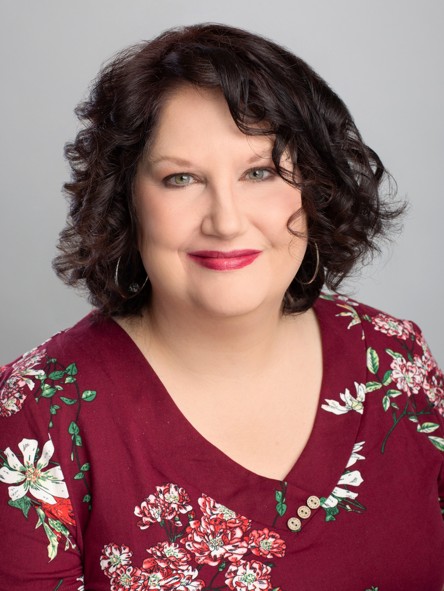

My pronouns are She/Her/Hers. I am a Licensed Professional Counselor in the state of Tennessee. I identify as bisexual, and I am experienced in treating individuals who fall under the LGBTQIA+ umbrella. I specialize in LGBTQIA+ concerns, such as gender questioning, gender dysphoria, transitioning concerns, concerns about coming out, and when appropriate, I can provide letters for HRT or surgery.
I'm also trained and experienced in treating grief, Bipolar Disorder, depression, and trauma in LGBTQIA+ communities.
I am a member of SAIGE-SOCIETY (Society for Sexual, Affectional, Intersex, and Gender Expansive Identities), ALL OUT, Human Rights Campaign, Tennessee Pride Chamber, and World Professional Association for Transgender Health (WPATH).
I graduated from Middle Tennessee State University with a BA in psychology. I attended Trevecca University for my graduate program and received a Master of Arts in counseling. I am a Licensed Professional Counselor, licensed by the state of Tennessee (#2157) with a Mental Health Provider designation. I offer online counseling to all adults in the state of Tennessee. I respect all sexual and gender identities. I will not try to “talk you out of it”; I will help you navigate the difficult waters that are often a mirror image of transition itself. You will be safe, and you will be helped.
Besides my passion for counseling, I am a fan of true crime books and documentaries, and I enjoy spending time with my family and close friends. I am an avid animal person, especially when it comes to my dogs.